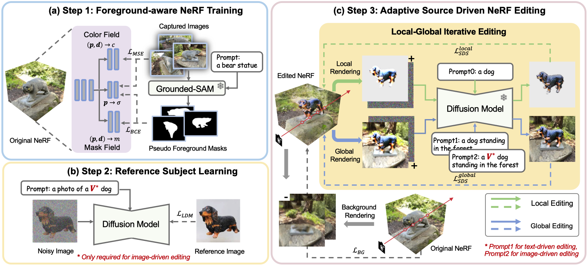

In this paper, we target the adaptive source driven 3D scene editing task by proposing a CustomNeRF model that unifies a text description or a reference image as the editing prompt. However, obtaining desired editing results conformed with the editing prompt is nontrivial since there exist two significant challenges, including accurate editing of only foreground regions and multi-view consistency given a single-view reference image. To tackle the first challenge, we propose a Local-Global Iterative Editing (LGIE) training scheme that alternates between foreground region editing and full-image editing, aimed at foreground-only manipulation while preserving the background. For the second challenge, we also design a class-guided regularization that exploits class priors within the generation model to alleviate the inconsistency problem among different views in image-driven editing. Extensive experiments show that our CustomNeRF produces precise editing results under various real scenes for both text- and image-driven settings.
Given an original 3D scene, CustomNeRF aims to edit it according to a textual description or a reference image. Our pipeline consists of three steps in total.
(a) Reconstruct the original 3D scene with a foreground-aware NeRF, which enables the identification of foreground regions.
(b) Finetune the pre-trained text-to-image diffusion model to embed the visual subject in the reference image into a special token V*. This step is only required in image-driven editing.
(c) Optimize the given NeRF with our proposed Local-Global Iterative Editing (LGIE) training scheme to align with the textual description or the reference image. The local and global data flows occur in an alternating manner.
Using CustomNeRF, you can use text descriptions or reference images for NeRF editing, keeping the foreground area changed without affecting the background area.